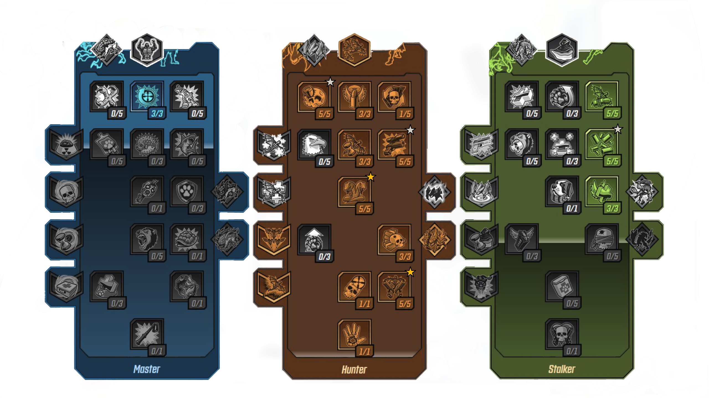
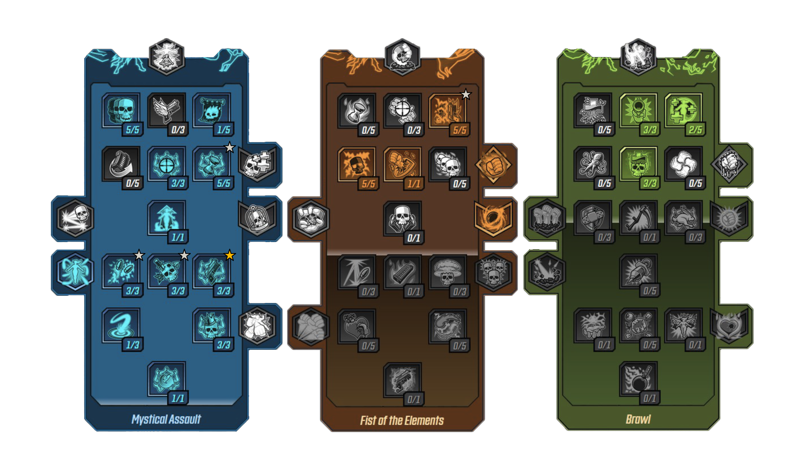
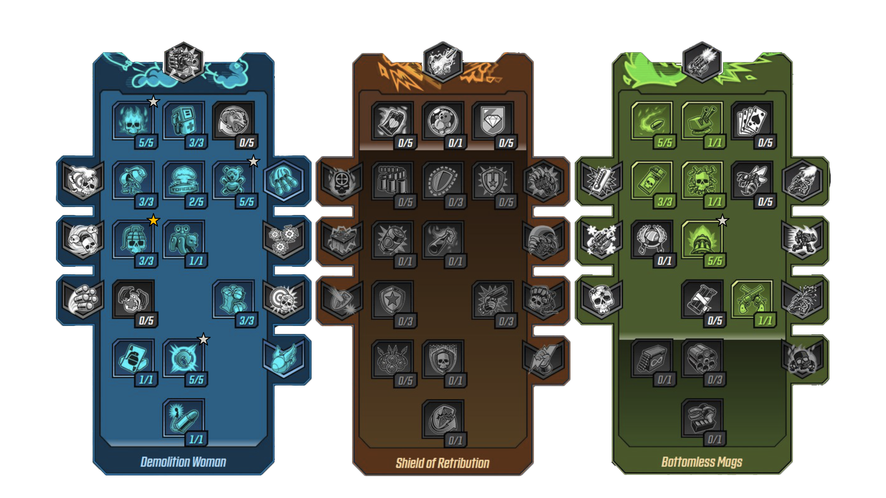
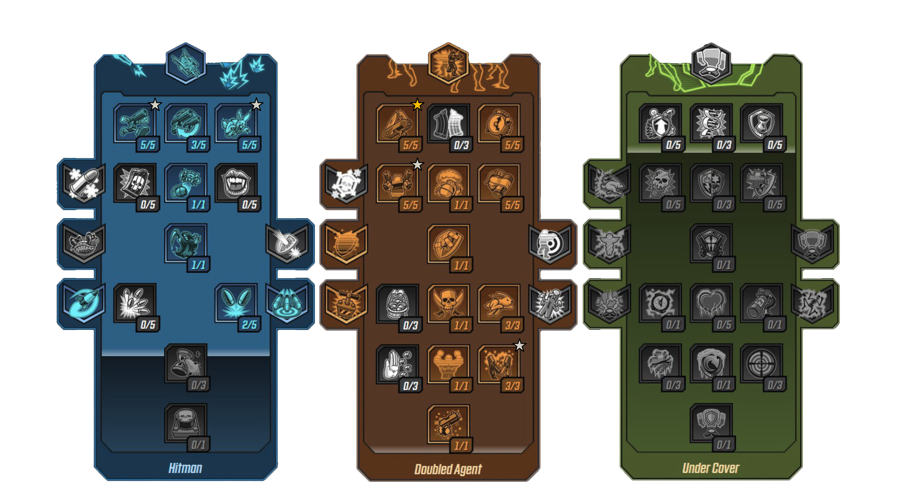

Do you like hunting?
Do you like pets?
Then Fl4k is just right for You!
CLASS:
BEASTMASTER
FL4K is a wandering robot who always brings one of their three loyal pets
into battle to buff stats and attack enemies. Their action skills let them
send forth dive-bombing Rakk, teleport Gamma Burst-irradiated pets through
rifts, and even Fade Away to temporarily become invisible while moving
faster and regenerating health.

The best build for FL4K
Are you always looking for a fight?
Do you like controlling the battlefield?
Then Amara is just right for You!
CLASS:
SIREN
Gifted with powerful Siren abilities, Amara is a renowned champion of the
people and bonafide badass. Using her action skills she can Phaseslam the
ground to damage nearby enemies and knock them into the air, Phasegrasp
enemies in place with a giant ethereal fist, or even Phasecast an astral
projection of herself that deals damage to everything in its path.

The best build for Amara
Do you like non-stop shooting without reloading?
Do you like big iron bears?
Then Moze is just right for You!
CLASS:
GUNNER
Moze is a battle-hardened former Vladof army soldier who specializes in
mechanized combat. She uses an action skill to digistruct and climb into
her bipedal tank, Iron Bear, which has hardpoints suitable for mixing,
matching, and mounting high-velocity Railguns, rapid-firing Miniguns,
semi-automatic Grenade Launchers, flamethrowers, pneumatic fists, and
homing rocket launchers.

The best build for Moze
Are you a lone wolf?
Do you like bamboozling your enemies?
Then Zane is just right for You!
CLASS:
OPERATIVE
Born into Pandora's notorious Flynt family, Zane is a semi-retired
corporate hitman who always has a gadget up his sleeve. His action skills
include a SNTNL drone that flys around and attacks enemies with a machine
gun, a deployable Barrier shield, and a Digi-Clone that simultaneously
distracts enemies and dishes out damage and which Zane can teleport to
switch places with.

The best build for Zane